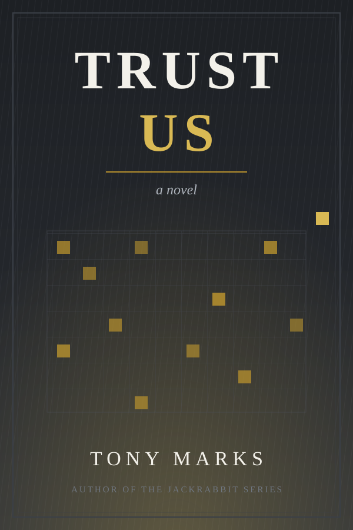

Trust Us
The world got smaller. The questions didn't.

About the Book
The world did not end. It got smaller, and slower, and learned to do without almost everything — except answers.
When a question is too hard for an enclave — which crop to trust to which field in which order, what to do about a river that a lost boundary has put on the wrong side of a line — there is one place left that can still take it. People carry their figures halfway across a broken world to Slough, and the Bank, for a fee, delivers. Nobody asks how. Nobody has needed to for a very long time. That is rather the point of the place.
Daniel Mercer has spent eleven years finding the gap between passed and correct. Now the Bank has asked for him by name. The job would change everything: the wage, the enclave, the whole shape of the life he and Ruth have been saving towards. All he has to do is cross an ocean, walk through the brightest gates left in the world — and go on being the man who asks the mildest question in it.
What's it all doing?
Trust Us is a standalone story, unconnected to the Jackrabbit universe — though readers of the series will recognise the author's abiding suspicion of anyone who says "trust us".
“The problem is never the computing. Anyone can buy computing. What you cannot buy, at any price, is somebody who wants to solve your problem.” — Martin Pell, recruitment
Two Lives
The road
Daniel
A quiet, careful man from a quiet, careful enclave, saying goodbye to the woman he loves at the gate. Six months, worst case. Two months by cart and sail across a drowned and emptied world, to an interview at the one institution still bright enough to be worth the journey.
He has been asked for by name. He intends to find out why.
The estate
Vernon
Every evening, the whole grey estate walks home through the drizzle to the one bright thing anybody has: the games. The seasons, the guilds, the boards — and the lucky few who climb high enough to be promoted, the prize above all prizes, though nobody can quite say where the promoted go.
Vernon stopped wanting any of it a long time ago. Then, one evening, at a café table nobody ever uses, a woman stirs a cold cup of tea — and for no reason he can name, he stops walking.
Two lives, half a world apart, that have no business touching. Between them stands the Bank — and the one question neither of them was ever supposed to ask.
Themes
“We do not touch the old game, for bad things will happen.” — The Stewards' liturgy
Step Inside
Meet the people of the road, the estate, and the cave — or start where every journey starts: at the gate, on a morning that is far too fine for it.